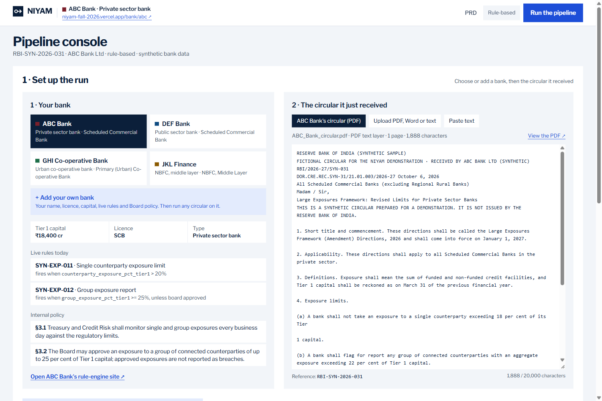
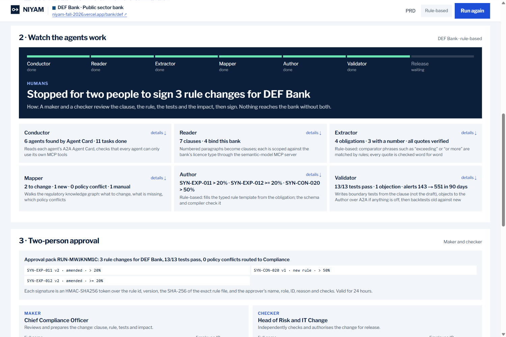
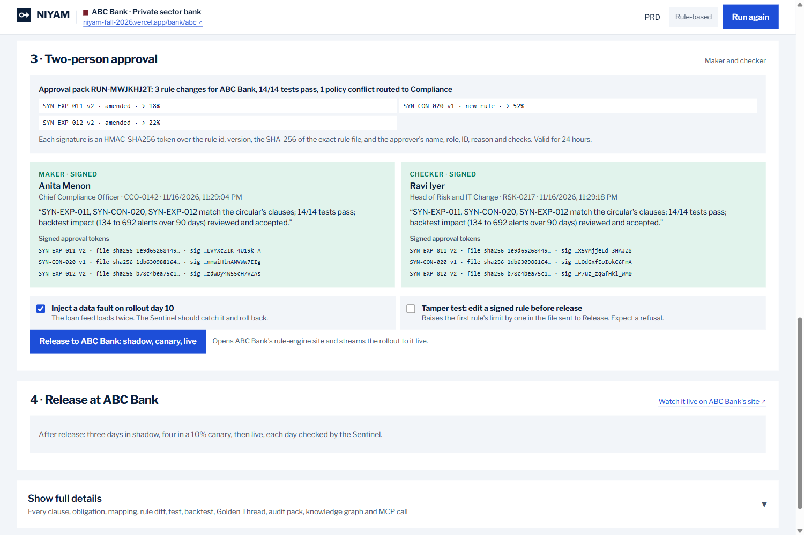
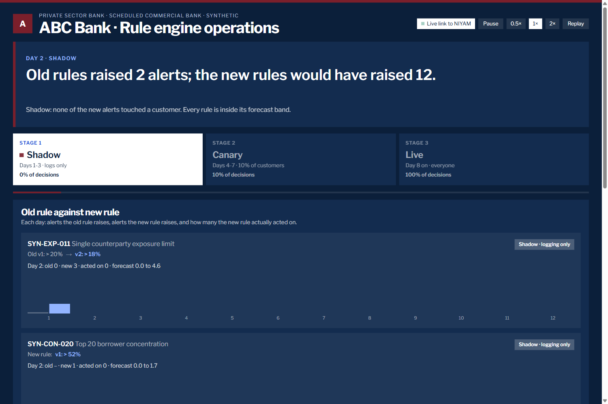
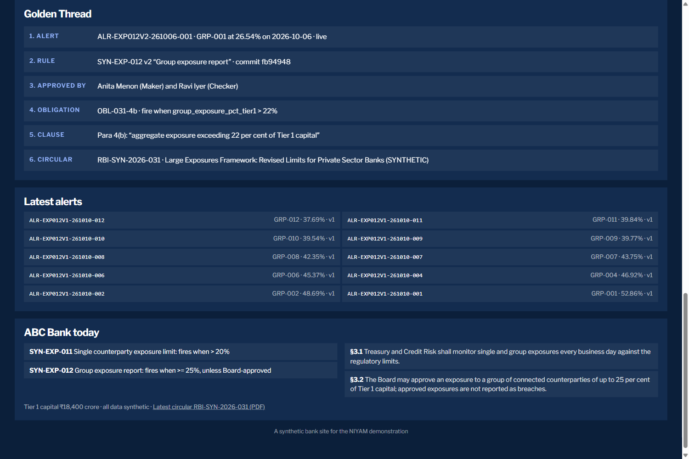

Seven AI agents turn a regulatory circular into a tested, two-person-approved, monitored live bank rule, and trace every alert back to the sentence that caused it.
The problem
A circular is written for people. A bank runs on systems. In between sit weeks of reading, meetings, tickets and testing, and a penalty if the bank gets it wrong or late.
RBI Master Directions replacing about 9,000 circulars; each now changes by amendment
Business Today, 28 Nov 2025
RBI penalties in 2024-25, worth ₹54.78 crore; 264 on co-operative banks
RBI Annual Report 2024-25
to fully implement a regulatory change, by compliance officers' own account
CUBE Cost of Compliance 2025
urban co-operative banks and NBFCs applying the same rules with small teams
RBI, 2024-25
How a bank does it today
“Exceeding 25%” becomes “25% or more” somewhere between the circular, the ticket and the code.
Every step waits for the one before it. A late rule is a breach.
When an inspector asks why an alert fired, the answer is spread across emails, tickets and code.
Our solution
Not an agent that reads a circular and tells you what to do. NIYAM produces the tested, approved, monitored rule itself, and proves why every alert fired.
Reading, scoping, mapping, drafting and testing run in one pass.
Two people sign; the rule earns its way in through shadow and canary.
Any alert → rule version → approvers → obligation → the exact sentence.
How it works
Finds the agents by their A2A Agent Cards and hands each its task.
Splits the circular into clauses; decides which bind this bank's licence.
Obligation with number, operator and the exact quote, or it is rejected.
Finds the bank's rules and policies to change, gaps and conflicts.
Writes typed rule files on a draft branch, checked by schema and compiler.
Boundary tests from the regulation; objects to the Author over A2A; 90-day backtest.
Verifies both signatures; shadow, canary 10%, live; rolls back on drift.
Sign with name, ID, reason and checklist, bound to the exact file.
Agents reach data and tools only through seven MCP servers with per-agent allowlists, checked twice. Runs fully rule-based; an LLM is optional and checked by the same gates.
Live prototype · 1 of 4

Four synthetic banks: a private bank, a public bank, a co-operative bank and an NBFC, each with its own capital, live rules, policy, loan book and circular.
Add your own bank: name, licence, capital, live rules and Board policy.
Upload any circular as PDF, Word or text. The PDF and its source text produce identical rules (tested).
Live prototype · 2 of 4

Each step says what the agent does for this bank and how.
DEF Bank's circular says “20 per cent or more”: the rule fires on >=, not >. Generated boundary tests prove it: 13/13 pass.
The Validator objected once and the Author fixed the draft before any human saw it.
Live prototype · 3 of 4

Maker (Chief Compliance Officer) and checker (Head of Risk) each give a name, employee ID, a reason and four review checks.
Each signature is an HMAC-SHA256 token over the rule's SHA-256, the approver, role and reason; valid 24 hours.
A built-in tamper test edits a signed rule: Release refuses it.
Live prototype · 4 of 4


Shadow (logs only) → canary (10% of customers) → live. Old rule against new rule, day by day. An injected data fault is caught by the Sentinel and rolled back automatically. Then the Golden Thread traces an alert to its sentence.
Architecture
Seven agents with Agent Cards and JSON-RPC endpoints; objections travel Validator → Author, at most three rounds.
Knowledge graph, semantic model, rule compiler, backtest, git, approvals, deploy-monitor. Least privilege.
Circular → clause → obligation → rule version → approval → alert; Neo4j schema, one query per thread.
Business terms mapped to the bank's columns, so a rule never points at a field that does not exist.
Strict schema compiled to read-only SQL by code; reviewable by compliance staff.
Next.js and TypeScript on Vercel, official MCP SDK, SQLite in WebAssembly, isomorphic-git, PDF and Word intake.
Users and market
| Segment | Why |
|---|---|
| Urban co-operative banks | 1,457 of them; bank-level rules, tiny teams, most penalties |
| NBFCs | 9,291 registered; bank-like concentration rules |
| Small finance and payments banks | Fast-growing, short of compliance staff |
| Large banks | A layer over the rule engines they already run |
global RegTech market in 2025, growing 17 to 21% a year
IMARC Group; ResearchAndMarkets
Existing tools stop at telling a bank what changed. Circular to live rule is the open step.
Business model and roadmap
Annual licence per entity, tiered by size and licence type.
One MCP adapter per AML, fraud or limit engine; reused across banks.
Map the semantic model to the bank's tables; load rules and policies.
Runs inside the bank's boundary; data never leaves.
What is built and proven
automated tests, including every bank end to end
sample banks plus a bank you define
of obligations carry a verified exact quote
per run in rule-based mode; no LLM key needed
PDF/Word intake, 7 agents, MCP allowlists, typed rules, tests, backtest, signed approvals, shadow/canary/live, Sentinel, Golden Thread, bank sites.
OCR for scanned PDFs, Neo4j and a warehouse inside the bank, adapters for real rule engines.
Every bank, circular, loan and approver in the prototype is synthetic and labelled so.
Try it